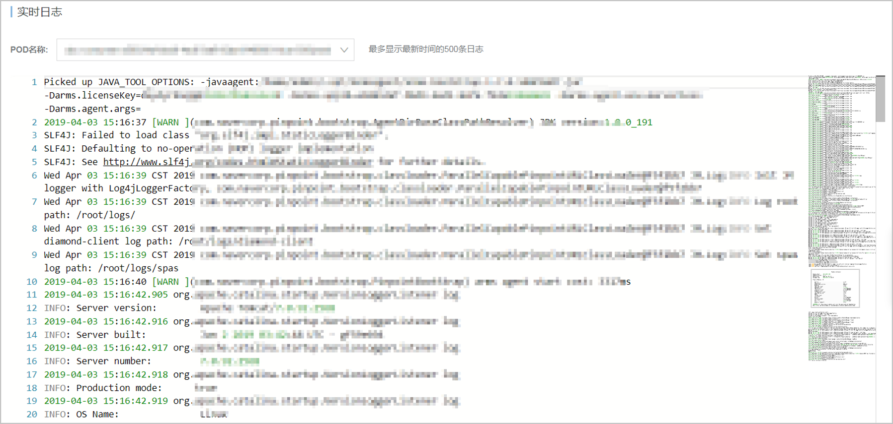
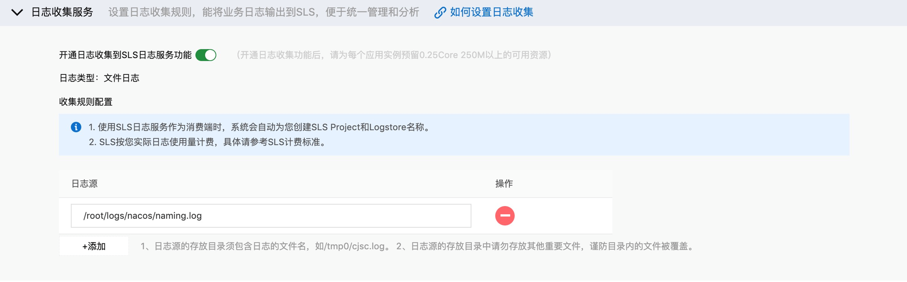
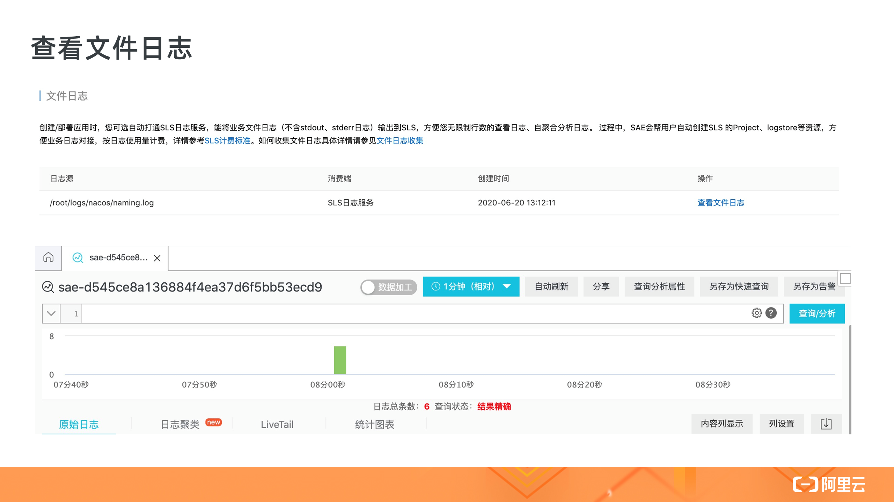
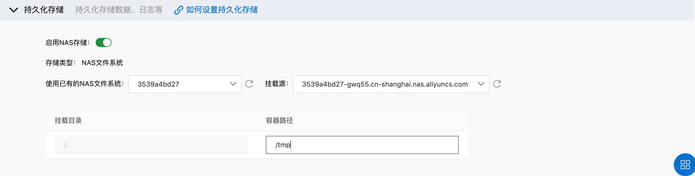
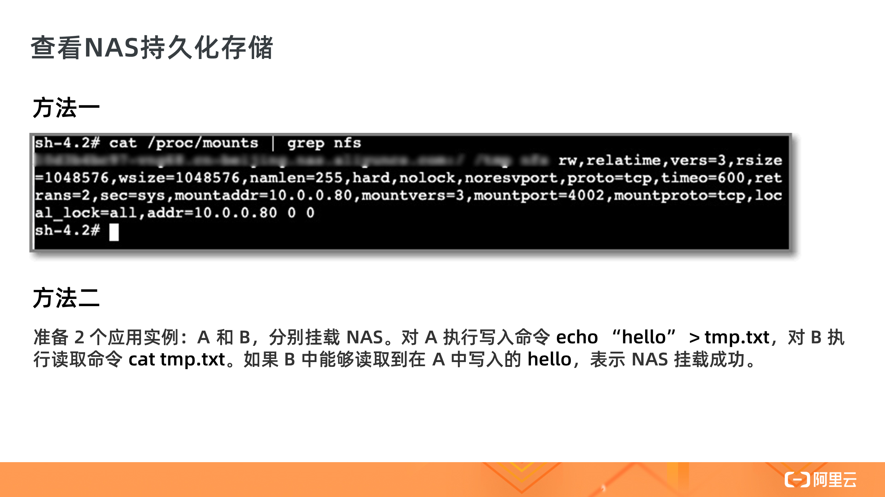

- 01 架构的演进.md
- 02 Serverless 的价值.md
- 03 常见 Serverless 架构模式.md
- 04 Serverless 技术选型.md
- 05 函数计算简介.md
- 06 函数计算是如何工作的？.md
- 07 函数粘合云服务提供端到端解决方案.md
- 08 函数计算的开发与配置.md
- 09 函数的调试与部署.md
- 10 自动化 CI&CD 与灰度发布.md
- 11 函数计算的可观测性.md
- 12 典型案例 1：函数计算在音视频场景实践.md
- 13 典型案例 3：十分钟搭建弹性可扩展的 Web API.md
- 14 Serverless Kubernetes 容器服务介绍.md
- 15 Serverless Kubernetes 应用部署及扩缩容.md
- 16 使用 Spot 低成本运行 Job 任务.md
- 17 低成本运行 Spark 数据计算.md
- 18 GPU 机器学习开箱即用.md
- 19 基于 Knative 低成本部署在线应用，灵活自动伸缩.md
- 20 快速构建 JenkinsGitlab 持续集成环境.md
- 21 在线应用的 Serverless 实践.md
- 22 通过 IDEMaven 部署 Serverless 应用实践.md
- 23 企业级 CICD 工具部署 Serverless 应用的落地实践.md
- 24 Serverless 应用如何管理日志&持久化数据.md
- 25 Serverless 应用引擎产品的流量负载均衡和路由策略配置实践.md
- 26 Spring CloudDubbo 应用无缝迁移到 Serverless 架构.md
- 27 SAE 应用分批发布与无损下线的最佳实践.md
- 28 如何通过压测工具+ SAE 弹性能力轻松应对大促.md
- 29 SAE 极致应用部署效率.md
因收到Google相关通知，网站将会择期关闭。相关通知内容
24 Serverless 应用如何管理日志&持久化数据
实时日志

首先，SAE 支持查看应用实例分组下各个 Pod 的实时日志。当应用出现异常情况时，可以通过查看 Pod 的实时日志定位问题。当应用运行时，可以在【控制台 - 日志管理菜单下 - 实时日志子菜单】方便地看到应用实例的实时日志。
文件日志

SAE 将业务文件日志（不包含 stdout 和 stderr 日志）收集并输入 SLS 中，实现无限制行数查看日志、自行聚合分析日志，方便业务日志对接，并按日志使用量计费。
您可以在部署应用时配置日志收集服务，填入需要采集的日志源，对于滚动日志的场景，可以填入通配符进行解决。

当配置完成后，可以在【控制台 - 日志管理菜单 - 文件日志子菜单】方便地看到采集的文件日志。
NAS 持久化存储

由于存储在容器中数据是非持久化的，SAE 支持了 NAS 存储功能，解决了应用实例数据持久化和实例间多读共享数据的问题。
您可以通过部署应用来配置持久化存储，选择创建好的 NAS，并填入容器中对应的挂载路径即可。

当配置完成后，可以通过 cat /proc/mount | grep nfs 命令查看是否挂载成功，或者可以准备 2 个应用实例，A 和 B，分别挂载 NAS。对 A 执行写入命令 echo “hello” > tmp.txt，对 B 执行读取命令 cat tmp.txt。如果 B 中能够读取到在 A 中写入的 hello，表示 NAS 挂载成功。
© 2019 - 2023 Liangliang Lee. Powered by gin and hexo-theme-book.